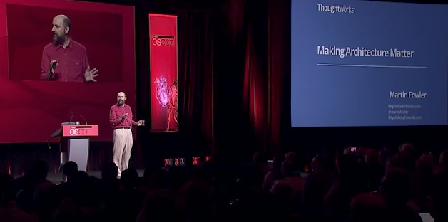

A website on building software effectively
If there's a theme that runs through my work
and writing on this site, it's the interplay
between the shift towards agile thinking and the
technical patterns and practices that make agile
software development practical. While specifics
of technology change rapidly in our profession,
fundamental practices and patterns are more
stable. So writing about these allows me to
have articles on this site that are several
years old but still as relevant as when they
were written.
As software becomes more critical to modern business, software needs to
be able to react quickly to changes, allowing new features to be be
conceived, developed and put into production rapidly. The techniques of
agile software development began in the 1990s
and became steadily more popular in the last decade. They focus on a
flexible approach to planning, which allows software products to change
direction as the users' needs change and as product managers learn more
about how to make their users effective. While widely accepted now, agile
approaches are not easy, requiring significant skills for a team, but more
importantly a culture of open collaboration both within the team and with a
team's partners.
This need to respond fluently to changes has an important impact upon
the architecture of a software system. The
software needs to be built in such a way that it is able to adapt to
unexpected changes in features. One of the most important ways to do this
is to write clear code, making it easy to understand what the program
is supposed to do. This code should be divided into modules which allow
developers to understand only the parts of the system they need to make a
change. This production code should be supported with automated tests that
can detect any errors made when making a change while providing examples
of how internal structures are used. Large and complex software efforts
may find the microservices architectural style
helps teams deploy software with less entangling dependencies.
Creating software that has a good architecture isn't something that can
be done first time. Like good prose, it needs regular revisions as
programmers learn more about what the product needs to do and how best to
design the product to achieve its goals. Refactoring is an essential technique to allow a
program to be changed safely. It consists of making small changes that
don't alter the observable behavior of the software. By combining lots of
small changes, developers can revise the software's structure supporting
significant modifications that weren't planned when the system was first
conceived.
Software that runs only on a developer's machine isn't providing
value to the customers of the software. Traditionally releasing software
has been a long and complicated process, one that hinders the need to
evolve software quickly. Continuous Delivery uses
automation and collaborative workflows to remove this bottleneck,
allowing teams to release software as often as the customers demand.
For Continuous Delivery to be possible, we need to build in a solid
foundation of Testing, with a range of
automated tests that can give us confidence that our changes haven't
introduced any bugs. This leads us to integrate testing into
programming, which can act to improve our architecture.
Data Management
There are many kinds of
information out there, but
the kind I'm most interested in
is data about data, or metadata.
This includes data about the structure
of data, data about the meaning of data,
and data about the usage of data. I'm
particularly interested in how metadata
can be used to improve the quality of
data, and how it can be used to improve
the efficiency of data management. I'm
also interested in how metadata can be
used to improve the usability of data,
and how it can be used to improve the
security of data. I'm currently working
with data from the web, and from Mongo.
Domain-Specific Languages
A common problem in computer science
is that software systems are often too
complex, and too difficult to understand.
One way to address this problem is to use
domain-specific languages(DSLs), which are
languages that are designed to solve particular
problems, or to address particular domains within
a larger language.
Books
I've written some books on software development,
including Refactoring, Patterns of Enterprise
Application Architecture, and Domain-Specific
Languages. I've also written a book on the history
of software, called "The Art of Unix Programming",
and a book on the history of the software industry,
called "The Software Industry: A History of Computing".
My Books Page...
Conference Talks

I've often asked to give talks at conferences.
Some of which I've recorded and made available
online. You can watch them on my videos page.
My Videos Page...
Board Games
I've long been a fan of board games. I enjoy
a game that challenges my mind, requiring me to
think strategically. Some of my favorite games include
Settlers of Catan, Ticket to Ride, and Carcassonne. I
also enjoy playing games with my family and friends.
My Board Games page...
Recent Changes
If you'd like to be notified when I post new material,
subcribe to my RSS, LinkedIn,
X (Twitter), or Mastodon
feeds. I also have a page dedicated to recent changes.
Interviewed by Book Overflow podcast on Refactoring
Fri 04 Oct 2024 09:16 CEST
I was interviewed on the Book Overflow podcast about the Refactoring
book. We talked about the origins of the book, the relationship
between refactoring, testing, and extreme programming, how refactoring is
used in the wild, and the role of books and long-form prose today.
more…
Legacy Modernization meets GenAI
Tue 17 Sep 2024 09:07
Most of the talk about the impact of GenAI on software development is
about its ability to write (messy) code. But many of us think it's going
to be much more useful to help us understand existing messy code,
as part of a modernization effort. My colleagues Alessio
Ferri, Tom Coggrave, and Shodhan
Sheth have been considering how GenAI can do this,
including building an internal tool to help explore the possibilities.
The tool uses an LLM to enhance a knowledge graph based on the AST of the
code base. It also uses an LLM to help users query this knowledge graph.
more…
Governing data products using fitness functions
Thu 05 Sep 2024 09:37
Decentralized data management requires automation to scale governance
effectively. Fitness functions are a powerful automated governance
technique my colleagues have applied to data products within the context
of a Data Mesh. Since data products serve as the foundational building
blocks of a data strategy, ensuring robust governance around them
significantly increases the chances of success. Kiran
Prakash explains how to do this, starting with simple tests for
key architectural characteristics and moving on to leveraging metadata
and Large Language Models.
more…
Bliki: Cycle Time
Wed 04 Sep 2024 00:00
Cycle Time is a measure of how long it takes to get a new feature in a
software system from idea to running in production. In Agile circles, we try
to minimize cycle time. We do this by defining and implementing very small
features and minimizing delays in the development process. Although the rough
notion of cycle time, and the importance of reducing it, is common, there is a
lot of variations on how cycle time is measured.
more ...
Rewriting Strangler Fig
Thu 22 Aug 2024 11:51
Two decades ago, I posted that I found
that the strangler fig plant was an interesting
metaphor for the gradual replacement of a
legacy system. I didn’t refer to the metaphor since,
but meanwhile it grew a life of its own. Other
people increasingly referred to the strangler
fig approach to modernization, and traffic to
that post steadily increased: currently it gets
about 5000 page views a month, one of the more
popular pages on this site. So I decided I needed
to update that page, and have
rewritten it, focusing on the core activities we
need to do to make a success of such a venture.
more...
Onboarding to a “legacy” codebase with the help of AI
Thu 15 Aug 2024 10:32
Much of the attention to generative AI in software development is
about generating code. But it may have a more useful role in helping us
understand existing code. This is especially true for older codebases
that are getting hard to maintain (“legacy”) or to improve onboarding in
teams that have a lot of fluctuation.
Birgitta Böckeler demonstrates the possibilities here
by picking an issue from an open-source hospital management system and
exploring how AI could help her deal with it.
more…